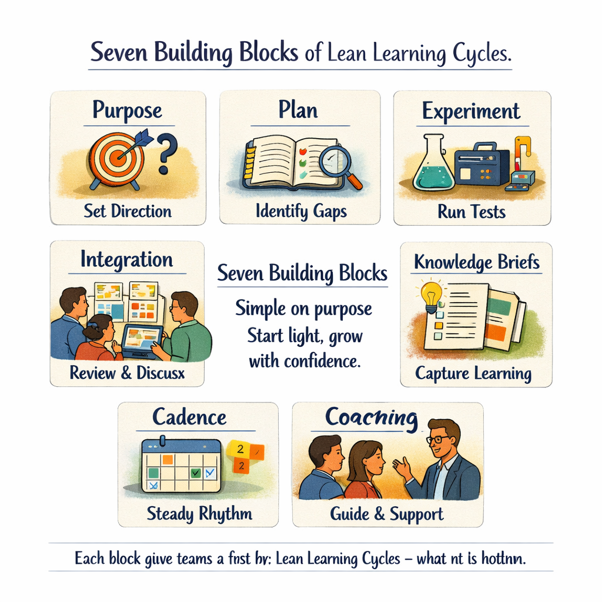
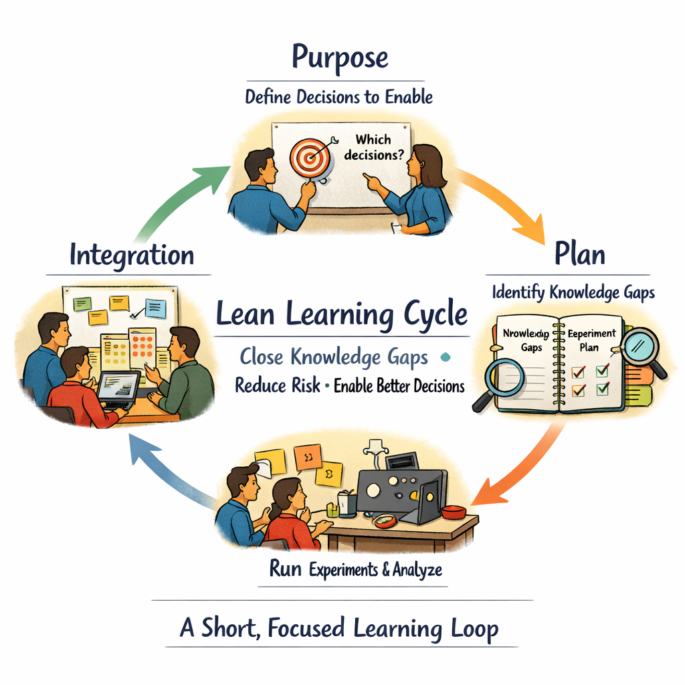

Section 19.1
The Seven Building Blocks at a Glance
A Lean Learning Cycle is a short, fixed time loop where a team closes specific knowledge gaps so they can make better decisions with less risk. Instead of pushing generic “progress”, each cycle is anchored in clear questions, simple experiments, and visible learning that feed into later design and industrialization work.
You can think of each cycle as a mini project: it has a purpose (which decisions we want to enable), a plan (which knowledge gaps we will address), execution (experiments and analysis), and an integration event where the team steps back and asks what this means for the product and the roadmap.

Block 1
Pretotype and Product Attributes
A simple “fake brochure” that describes the product from the customer’s perspective, translated into major subsystems, performance targets, and architecture elements.
Block 2
Priority Matrix
Connects customer benefits to product attributes, showing which parts of the system really drive value and risk. Focuses limited early-phase learning on the areas where getting it wrong hurts most.
Block 3
Key Decisions and Knowledge Gaps
In the overlap between important benefits and critical attributes, you find the key decisions that must be made right — and late. Knowledge gaps are the specific things a decision maker needs to know but does not yet know.
Block 4
Increment Plan
Lays out key decisions and knowledge gaps over 8–12 weeks. Not a Gantt chart, but a learning agenda: which decisions matter most, which gaps to tackle first, and which risks to watch.
Block 5
Iteration Plan
At the start of each cycle, the team creates an iteration plan: which knowledge gaps to address now, which hypotheses to test, and which experiments to run — all sized to fit the timebox.
Block 6
Learning Cycle Execution
During the cycle, the team runs experiments, simulations, or prototypes using a simple scientific method or LAMDA pattern. Short daily check-ins keep the focus on “What did we learn?”
Block 7
Visual Knowledge and Integration Events
At the end of each cycle, the team holds an integration event to review what was learned and decide what it means. Learning is captured in Knowledge Briefs, trade-off curves, and learning boards for future reuse.
These seven elements are not a rigid process; they are a lightweight scaffold. Coaches and teams can start with very simple versions of each and deepen them as they gain practice.
Section 19.2
Cadence, Not Chaos
The power of Lean Learning Cycles comes from cadence: short, predictable cycles with fixed integration events. A typical pattern is 2-week cycles, grouped into 8–12 week increments, each increment aligned to one or more key decisions — such as architecture choices or major supplier commitments.

“The timebox for each cycle is non-negotiable: the integration event happens on the planned date, even if not everything is ‘perfect’.”
This creates a gentle pressure to show real learning, not polished slides, and prevents experiments from stretching indefinitely or getting stuck behind day-to-day noise.
For coaches, this cadence is a practical lever: you don’t have to redesign the whole development system. You can introduce learning cycles as a rhythm inside an existing project and let results speak for themselves.